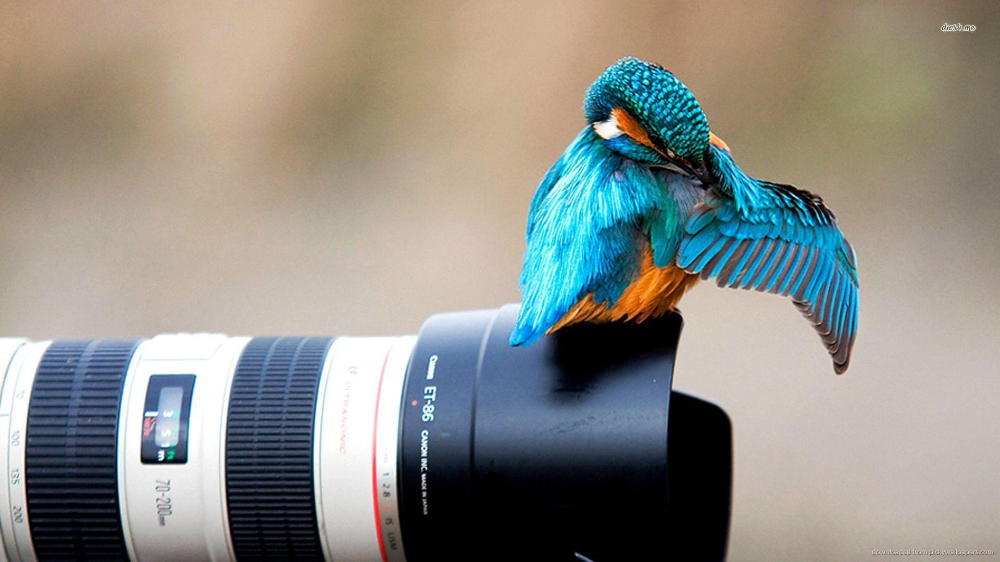

Commited and energetic professional photographer with 7+ years extensive experience in custom-made and specialized photography
CONCEPTING
Creative digital photographer, passionate about digital photography of several kinds, variations, acquired more than 7 years professional photography experience in HTML Template
CONCEPTING
Worked full time with the US Army, as a participant of the Personnel division, yet finished my time using Portfolio Website Templates, operating in the logistics area
CONCEPTING
Oversaw all aspects of workshop job as simple HTML resume developer and organisation administration consisting of economic, imaginative and also customer service processes
CONCEPTING
Familiar with various kinds of photography consisting of fashion, wild animals and undersea due to Portfolio Website Templates
Commited and energetic professional photographer with 7+ years extensive experience in custom-made and specialized photography
1
DISCUSS THE PROJECT
Creative digital photographer, passionate about digital photography of several kinds and also variations, acquired more than 7 years professional photography experience in HTML Personal Site Template
1
LOT OF CONCEPTING
Worked full time with the US Army, as a participant of the Personnel division, yet finished my time using Resume Template, operating in the logistics area
1
UX/UI PLANNING
Oversaw all aspects of workshop job as Free HTML Resume Code developer and organisation administration consisting of economic, imaginative and customer service processes
1
DESIGN
Familiar with various kinds of photography consisting of fashion, wild animals and undersea due to HTML Personal Website Template
Dedicated and energised professional photographer with 1+ years' comprehensive experience in customized and also specialized photography. Experienced in catching premium quality images and arranging products for photoshoots while displaying self-confidence and professionalism and trust in any way times. Proficient with different kinds of photography including style, wildlife and undersea due to HTML Personal Website Template. Extensive knowledge of working with innovative digital photography tools.